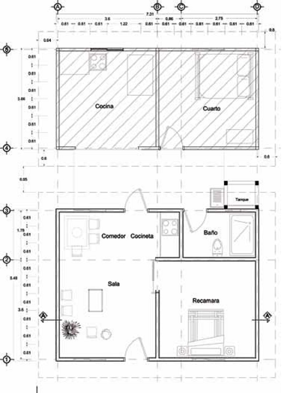
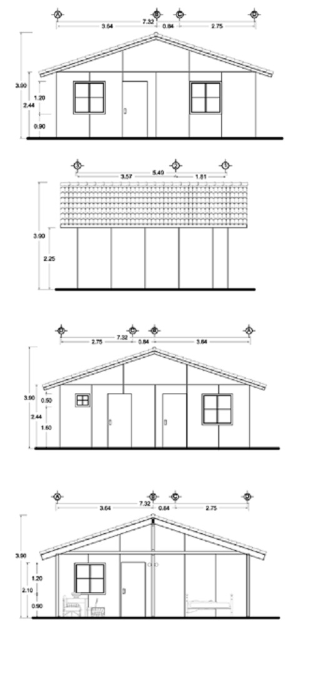

Prototipo
A manera de ejemplo, se escogió uno de los proyectos ganadores del 1 er. Concurso de Vivienda con Madera, este proyecto fue desarrollado por el Arq. Arturo López González. Con la finalidad de emplear la unidad de medida de la madera de 3.66 m (12¨) en cuanto a su longitud, este proyecto se modificó en su dimensionamiento, ampliando sus espacios habitables y respetando la idea original.
 